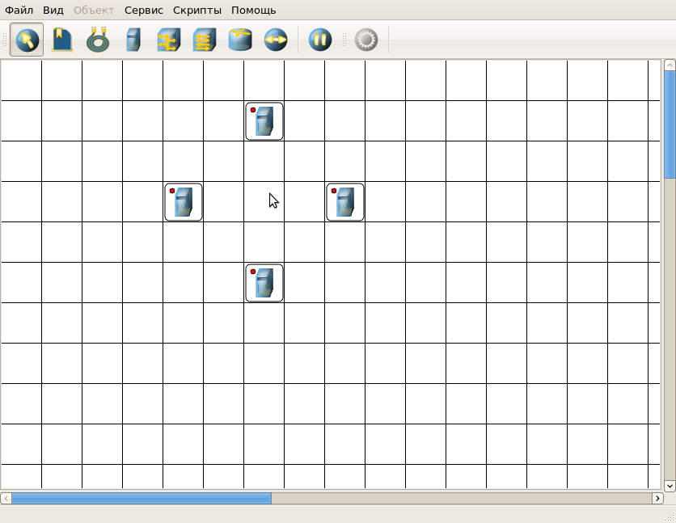
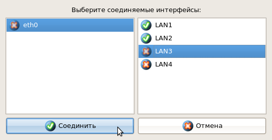
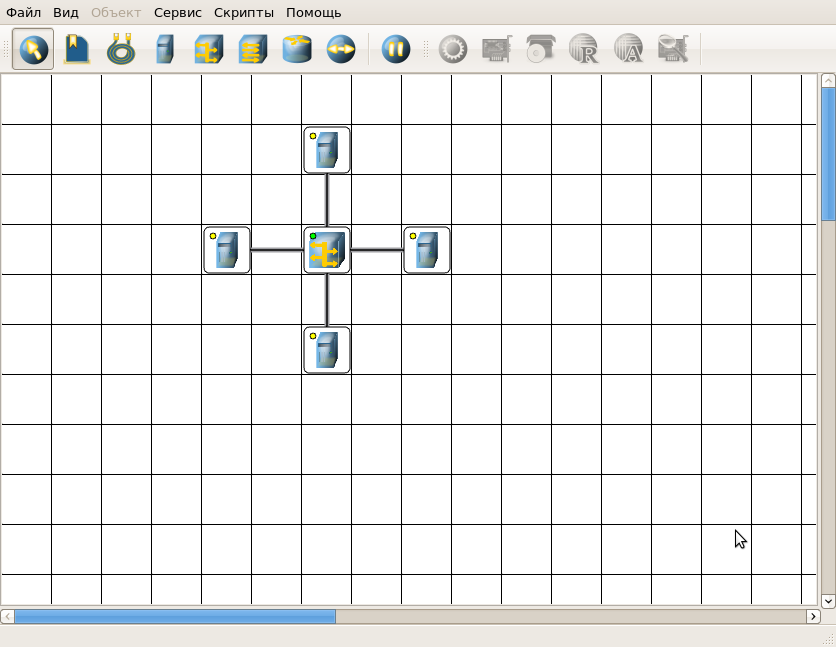

| Руководство NetEmul | ||
|---|---|---|
| Пред. | След. | |
Есть 2 способа построения сети. Первый с помощью скриптов, но это не интересно. А второй - самостоятельно, приложив свою фантазию (в умеренных количествах, т.к. нам эту сеть потом еще конфигурировать). Вот именно про второй способ здесь будет идти речь. Ну а для тех, кто предпочитает более легкий путь решения в программе есть пункт меню "Скрипты".
Итак, приступим.
Вот мы запустили программу, создали новую сцену ("Новый" в пункте меню "Файл"). Теперь на панели инструментов выбираем, например, компьютер, и начинаем расставлять.
По умолчанию, у компьютера есть только 1 интерфейс. Для того, чтобы добавить адаптер нужно выбрать пункт меню "Интерфейсы" в контекстном меню, либо на панели параметров. Откроется данное диалоговое окно:

При выборе какого-либо инструмента, он остается активным, пока не будет выбран другой.
После того как компьютеры расставлены, поставим коммутатор и соединим каждый компьютер с коммутатором, выбрав на панели инструментов иконку провода.
Для того, чтобы соединить два устройства кабелем, нужно выполнить следующие действия:

Внимательный пользователь, наверное, заметил кружочи различного цвета в левом верхнем углу на каждом значке устройства. Думаем, надо рассказать об их значении:
Ниже представлен результат нашей работы. Надеемся, что Вы все таки попробовали создать другую, более интересную сеть, отличную от нашей. Далее можете сохранить шедевр, или сразу же приступить к настройке.

| Пред. | Начало | След. |
| Интерфейс программы | На уровень выше | Настройка сети |